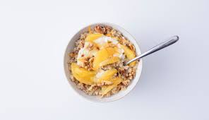

Citrus-Ricotta Oats

Italian oatmeal recipe. Quick and easy to make, flavored with fresh citrus, ricotta cheese, and honey.
ingredients
- 1/2 cup Quaker Oats (Quick or Old Fashioned, uncooked)
- 1 cup water
- 1/4 cup reduced-fat ricotta cheese
- 1/2 teaspoon grated orange zest
- 1 teaspoon honey
- 3 fresh orange segments
- 2 teaspoons coarsely chopped walnuts, toasted if desired
- 1 teaspoon light brown sugar
Steps
- In medium saucepan, bring water to a boil. stir in oats. Cook uncovered over medium heat, 1 minute for Qucik Oats, 5 minutes for Old Fashioned Oats, stirring occasionally until most of the liquid is absorbed.
- Stir in ricotta, orange zest, and honey. top with orange segments, walnuts, and brown sugar.